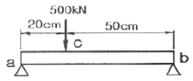
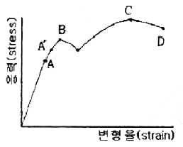
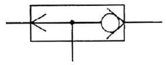
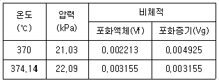

1과목: 일반기계공학
1. 하물(荷物)을 올리거나 내릴 때에 하물 자중에 의한 제동 작용을 이용하는 자동 하중 브레이크는 무엇인가?
2. 베어링 호칭번호'7206'에서'06'은 무엇을 표시 하는가?
3. 구리를 용해하는 흑연 도가니의 크기 표시는?
4. 소성가공에 속하지 않는 것은?
5. 밀어주는 힘이 80kgf 인 원통 마찰차가 12m/s의 속도로 회전하고 있을 때 전달동력은 약 몇kW 인가? (단, 마찰계수 = 0.2 이다.)
6. 공기기계를 압력에 따라 분류할 때 배출압력 10kPa 미만의 공기기계에 대한 일반적인 호칭으로 가장 적합한 것은?
7. 나사에 대한 설명으로 틀린 것은?
8. 너트의 종류 중에서 유체의 누출을 방지하기 위한 것이 주목적인 특수 너트는?
9. 유체기계에서 발생되는 캐비테이션(cavitation)의 발생을 예방하는 방법으로 적당하지 않은 것은?
10. 주철의 일반적인 특성을 나타낸 것으로 틀린 것은?
11. 취성재료로 구성된 축에 굽힘 모멘트 1.5 × 106N∙mm와 비틀림 모멘트 2 × 106 N∙mm 가 동시에 작용할 때 축지름은 약 몇 mm인가? (단, 축 재료의 허용 굽힘 응력은 6 N/mm2 이다.)
12. 두 축선이 서로 교차하는 기어장치는?
13. 용접부의 검사를 파괴 시험과 비파괴 시험으로 분류할 때 비파괴 시험법이 아닌 것은?
14. 기능에 따른 유압제어 밸브를 압력, 방향, 유량제어 밸브로 분류할 때 압력제어 밸브에 속하는 것은?
15. 드릴링의 작업조건으로 절삭속도가 80 m/min, 드릴 지름이 10 mm, 이송은 0.2 mm/rev이고 드릴 끝의 원추높이를 6.0 mm라고 하면, 구멍깊이 100 mm를 뚫는데 소요되는 절삭시간은 약 몇 분인가?
16. 철강 재료를 풀림처리(annealing)하는 목적에 해당되지 않는 것은?
17. 합성수지를 열가소성 수지와 열경화성 수지로 크게 2가지로 나눌 때 열가소성 수지에 속하는 것은?
18. 그림과 같은 단순 지지보의 c점에 500 kN의 하중이 걸릴 때, a 점에 작용하는 반력은 약 몇 kN 인가?

19. 다음 그림은 연강의 응력 변형율 선도이다. 이 그림에서 C점은 무엇을 나타내는가?

20. 밀링머신에서 구멍수가 24개의 약수인 24, 12, 8, 6, 4, 3, 2등분이 가능한 분할법은?
2과목: 유압기기 및 건설기계안전관리
21. 그림과 같은 유압 도면기호는 어떤 밸브를 나타내는가?

22. 유압 실린더와 유압 모터의 기능을 바르게 설명한 것은?
23. 유압 회로에서 파이프 내에 발생하는 에너지 손실을 줄일 수 있는 방법이 아닌 것은?
24. 베인 펌프의 1 회전당 유량이 40cc 일 때, 1분당 이론 토출 유량이 25 리터이면 회전수는 약 몇 rpm인가? (단, 내부 누설량과 흡입저항은 무시한다.)
25. 유압회로의 엑추에이터(actuator)에 걸리는 부하의 변동, 회로압의 변화, 기타의 조작에 관계없이 유압실린더를 필요한 위치에 고정하고 자유운동이 일어나지 못하도록 방지하기 위한 회로는?
26. 밸브의 전환 도중에서 과도적으로 생기는 밸브 포트 사이의 흐름을 의미하는 용어는?
27. 수은이 채워진 U자관에 어떤 액체를 넣었다. 액체측 자유 표면으로부터 깊이가 25 cm인 곳과 수은측 자유표면으로부터 깊이가 3.8 cm인 곳의 높이가 같다면 이 액체의 비중은 약 얼마인가? (단, 수은의 비중은 13.6 이다.)
28. 액체가 들어간 밀폐된 용기에서 특정 하중이 가해질 때, 이 하중에 의해 발생한 압력은 용기 안쪽 벽면에 동일하게 작용한다. 이러한 법칙(원리)을 무엇이라하는가?
29. 배관용 플랜지 등과 같이 정지 부분의 밀봉에 사용되는 실의 총칭으로 정지용 실이라고도 하는 것은?
30. 굴착기에서 송출 압력이 550 N/cm2 이고, 송출 유량이 30 ℓ/min 인 펌프의 동력은 약 몇 kW 인가? (단, 효율은 100%로 간주한다.)
31. 컨베이어 작업 시작 전 점검사항이 아닌 것은?
32. 낮은 지면에서 높은 곳으로 토층을 파 올릴 수 있는 굴착기는?
33. 공구를 다룰 때 주의해야 할 사항으로 틀린 것은?
34. 다음 중 방독마스크를 착용하여야 할 경우는?
35. 다음 중에서 재해발생의 주요 원인으로 불안전한 상태에 속하지 않는 것은?
36. 달기 체인을 사용한 작업에서 사용할 수 있는 체인은?
37. 건설기계기관에서 밸브간극을 규정간극보다 크게 했을 때 발생할 수 있는 현상과 가장 거리가 먼 것은?
38. 건설기계 운전을 시작하기 전의 안전준비 사항이 아닌 것은?
39. 건설기계에 사용되는 작동유가 구비하여야 할 성질과 거리가 먼 것은?
40. 순수한 카바이트 1kgf 으로 발생시킬 수 있는 아세틸렌 용량은?
3과목: 내연기관
41. 2행정 1실린더 기관에서 제동 평균유효압력이 10kPa, 실린더 내경이 10cm, 회전수가 750rpm, 행정이 12cm 일 때의 출력은?
42. 4행정 사이클 기관에 비하여 2행정 사이클 기관의 장점이 아닌 것은?
43. 스퀴시 공간이 원통형이나 4각형보다 크고, 연소실 입구를 연소실 최대지름에 비하여 작게하는 형식이며, 직접분사식으로 분류하고 있지만 주실에서 부실로 들어가는 입구로 볼 수 있는 조리개부의 특징을 가지고 있는 연소실은?
44. 자동차 배출가스 중 질소산화물을 저감시키기 위한 장치는?
45. 연료를 연소시켰을 때 폭발에 의한 고압의 연소가스는 노즐날개 사이에서 강력하게 분출하여 터빈 날개를 돌려서 터빈을 회전시키는 구조의 기관은?
46. 내연기관에서 윤활유의 기능 중 가장 중요한 기능은?
47. 일반적으로 공기비 센서(λ-sensor 또는 O2-sensor)의 출력특성이 안정되는 작동온도는?
48. 다음 중 커넥팅로드의 기능으로 틀린 것은?
49. 기관에서 폭발행정 이외의 행정이 수행되도록 에너지를 공급하고, 각 연소실의 폭발에 의한 토크 변동을 작게 하기 위한 부품은?
50. 250 rpm으로 운전되는 기관의 출력이 14710 kW, 연료소비량은 3680 kg/h 이었다. 연료의 저발열량이 43120kJ/kg 이라면, 제동열효율(nb) 및 제동연료소비율(be)은?
51. 내연기관을 구성하는 부품에 대한 기능 설명으로 적합하지 않은 것은?
52. 가솔린 기관에서 압축행정 중 점화시기에 도달하기 전에 연소실 내의 과열된 부분에 의하여 점화되는 현상은?
53. 다음 중 흡입효율을 증대시키기 위한 방법으로 적합하지 않은 것은?
54. 가솔린기관과 디젤(사바테사이클)기관의 차이점 설명 중 틀린 것은?
55. 방열기의 입구 온도 80℃, 출구 온도 60℃, 냉각수의 비열 1kcal/kg, 연료의 저위 발열량 10000kcal/kg, 기관의 연료소비율 20 kg/h 이고, 총발열량 중 냉각수로 전달되는 열량의 비율이 25%라면이 기관의 냉각수 유량은?
56. 내연기관의 실린더 내에서 가스가 실제로 하는 일량은 이론사이클로부터 얻어지는 일량보다 적다. 그 원인이 되는 항목과 가장 관계가 없는 것은?
57. 밸브 스프링의 서징 현상을 방지하는 방법으로 틀린 것은?
58. 직접분사식 디젤기관의 연소에 관한 설명으로 틀린 것은?
59. 디젤 연료의 구비조건으로 틀린 것은?
60. 소기와 배기 구멍이 실린더의 같은 쪽에 상하로 배열된 소기법은?
4과목: 건설기계정비
61. 실린더의 마모가 심할 때 일어나는 현상은?
62. 기중기 붐(Boom) 교환방법으로 가장 적합한 것은?
63. 에노드, 게이트, 캐소드라는 3개의 단자 게이트로 형성되었으며, 전류의 단속제어에 사용되는 반도체 소자는?
64. 건설기계에 사용되는 열교환기의 구성품이 아닌 것은?
65. 무한궤도식 도저(dozer)의 트랙 아이들러(track idler) 완충장치 중 리코일 스프링 종류가 아닌 것은?
66. 브레이크를 밟았을 때 제동이 잘되지 않고 소음이 나는 원인이 될 수 있는 것은?
67. 트랙터의 전조등 퓨즈를 교환하려 한다. 전원은 24V이고, 전조등은 2개이며, 병렬로 연결되어 있고 1개의 전력소모는 80W 이다. 사용하여야 할 퓨즈의 규격은? (단, 안전율은 20% 이다.)
68. 디젤기관의 연료공급 펌프의 본래 기능 이외에 행하는 또 다른 기능은?
69. 축압기(accumulator)의 종류로 틀린 것은?
70. 굴삭기의 피스톤 펌프를 정비 후 장착하여 가동해보니 진동 및 압력저하가 발생하였다. 그 원인과 가장 거리가 먼 것은?
71. 다음 중 콘크리트피니셔의 규격으로 맞는 것은?
72. 유압장치에서 압력 측정시 압력계의 바늘이 불규칙하게 움직이는 경우, 가장 먼저 해야 할 조치는?
73. 작업 용도에 의한 지게차 분류에서, 드럼을 신속하고 안전하게 운반하기 위한 용도로 사용되는 것은?
74. 최대하중 6톤을 감아올리는 크레인에 파괴하중 16톤인 로프 6개를 사용하였다면 안전계수는?
75. 기준전압을 가하여 소요전류와 회전수를 점검하는 시동 전동기 성능시험은? (단, 시동전동기는 엔진에 장착하지 않고 단품을 시험하는 조건이다.)
76. 덤프트럭의 휠베이스가 1.9m 이다. 핸들을 좌측으로 최대로 꺾었을 때 우측 바퀴가 30도, 좌측 바퀴는 45도 회전 하였다면, 이 차의 최소 회전 반경은?
77. 12V의 축전지에 부하를 접속했을 때, 250A의 전류가 흐르고 단자 전압은 9V 이다. 축전지의 내부 저항은?
78. 리퍼라고도 하고 도저의 뒤쪽에 부착하여 사용되며, 굳은 땅 파기, 암석제거에 효과적인 장치는?
79. 해상용 건설기계인 사리채취기(gravel plant)에 사용하는 스크린(screen)의 종류가 아닌 것은?
80. 도저(dozer)에 사용되는 트랙슈의 종류가 아닌 것은?
5과목: 기계열역학
81. 외부에서 받은 열량이 모두 내부에너지 변화만을 가져오는 완전가스의 상태변화는?
82. 온도 200℃, 압력 500kPa, 비체적 0.6m3/kg의 산소가 정압하에서 비체적이 0.4m3/kg 으로 되었다면, 변화 후의 온도는 약 얼마인가?
83. 다음 ( )안의 물질 중 엔트로피가 증가한 경우는?
84. 강성용기 안에 임계 상태의 물 1kg이 들어 있다. 온도를 370℃로 낮추면 건도는 약 얼마가 되는가? (단, 임계점근처의 비체적에 관한 값은 표와 같다)

85. 100℃ 의 구리 10kg을 20℃ 의 물 2kg이 들어있는 단열 용기에 넣었다. 물과 구리 사이의 열전달을 통한 평형 온도는 약 몇 ℃ 인가? (단, 구리비열은 0.45kJ/kg∙K, 물비열은 4.2kJ/kg∙K 이다.)
86. 압력 101kPa 이고, 온도 27℃일 때 크기가 5m×5m×5m 인 방에 있는 공기의 질량은 약 몇 kg 인가? (단, 공기의 기체 상수는 287 J/kg∙K 이다.)
87. 다음 중 열역학적 상태량이 아닌 것은?
88. 압력 0.2MPa, 온도 10℃ 상태의 암모니아에 대하여 비체적 v = 0.67319m3/kg, 엔탈피 h =1486.8kJ/kg이다. 내부 에너지는 약 몇 kJ/kg 인가?
89. 공기표준 Brayton 사이클에 대한 다음 설명 중 잘못된 것은?
90. 온도 100℃, 1kg의 포화증기가 응축하여 100℃의 액체가 되면서 25℃ 인 주위 공기에 2257kJ의 열을 방출한다. 이 때 주위 공기의 엔트로피 변화량은 약 얼마인가?
91. 강성용기에 압력 150kPa, 온도 20℃ 의 공기 10kg이 들어 있다. 이 용기에 공기를 더 주입하였더니 압력과 온도가 각각 250kPa, 30℃ 가 되었다. 약 몇 kg의 공기를 주입하였는가? (단, 공기의 기체상수는 0.287 kJ/kg∙K 이다.)
92. 피스톤이 있는 실린더 내에 유체의 압력 200kPa이고 비체적 0.5m3/kg이다. 압력이 일정한 상태로 비체적이 0.25m3/kg 이 될 때까지 압축될 때 유체가 받은 일은 몇 kJ/kg 인가?
93. 2MPa 압력에서 작동하는 가역 보일러에 포화수가 들어가 포화증기가 되어 나온다. 보일러의 물 1kg 당가한 열량은 약 몇 kJ/kg인가? (단, 2MPa 압력에서 물의 포화온도는 212.4℃, 포화수 비엔트로피는 2.4473kJ/kg∙K, 포화증기 비엔트로피는 6.3408kJ/kg∙K 이다.)
94. 100kPa 의 대기압 하에서 용기 속 기체의 진공압이 15kPa 이었다. 이 용기 속 기체의 절대압력은 몇 kPa 인가?
95. 150kg의 물을 18℃ 에서 26.2℃ 로 가열하는데 필요로 하는 열량은 약 몇 kJ 인가? (단, 물의 비열은 4.2kJ/kg∙K이다.)
96. 랭킨(Rankine)사이클에서 보일러 입구, 터빈 입구 및 응축기 입구의 엔탈피가 각각 192.5kJ/kg, 3002.5kJ/kg, 2361.8kJ/kg 일 때 펌프의 동력을 무시하는 경우 열효율은 약 몇 % 인가?
97. 다음 열역학 제1법칙에 관한 설명 중 틀린 것은?
98. 순수물질의 임계점(critical point)에 관한 설명으로 틀린 것은?
99. 다음 열역학적 내용에 대한 설명 중 옳은 것은?
100. 평판을 따라서 고온의 유체가 흐르고 있다. 유체로부터 평판으로의 단위시간당 열전달량의 크기에 관한 설명으로 틀린 것은?